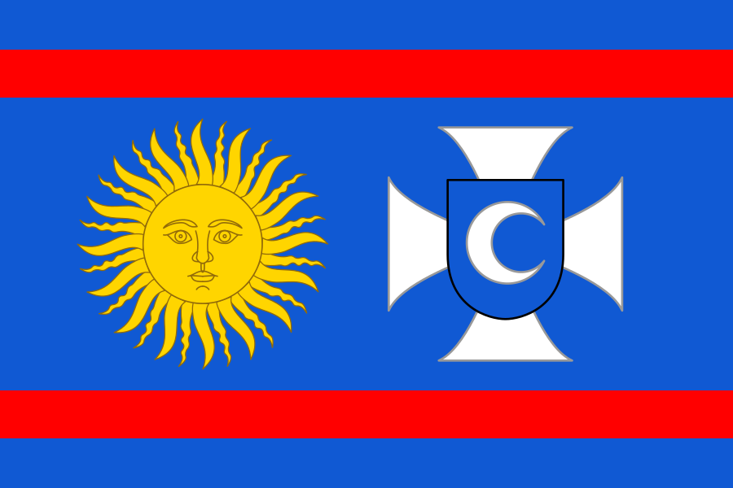
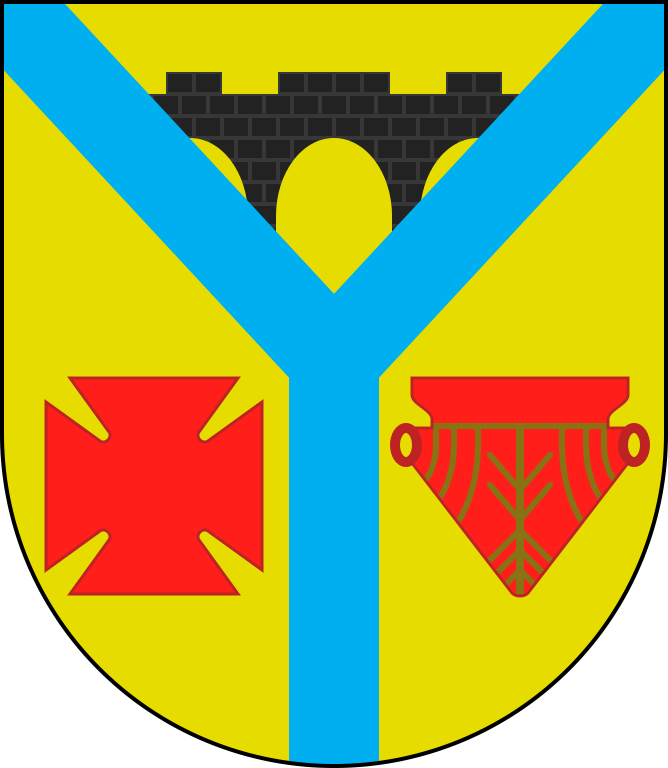
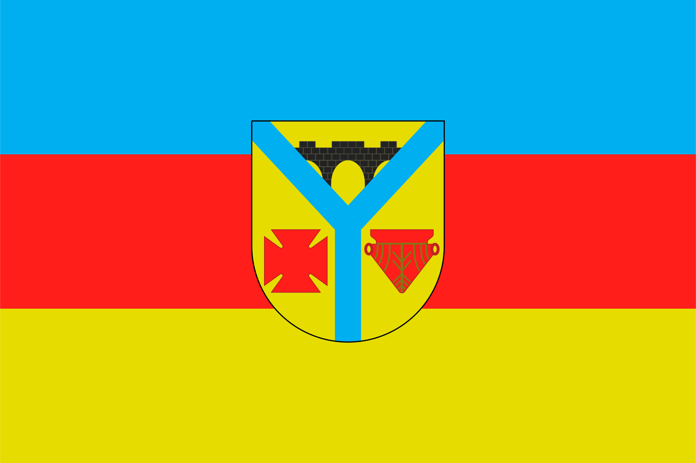

Черніве́цький райо́н — колишній[2] район України у Вінницькій області.
Адміністративний центр — смт Чернівці. Населення становить 20 999 осіб (01.01.2018).
У районі 1 селищна і 13 сільських рад; 1 селище міського типу і 39 сільських населених пунктів.
Географія
Чернівецький район розташований в південно-західній частині Вінницької області.
Межує на заході з Могилів-Подільським, півночі — Шаргородським, сході — Томашпільським, півдні — Ямпільським районами області.
Адміністративним, культурним і господарським центром району є смт. Чернівці, яке розташоване за 4 км від дороги загальнодержавного значення, та за 128 км від обласного центру м. Вінниця.
Територія району в адміністративних кордонах становить 0,59 тис. км², що становить 2,2% території області. На цій території розміщено 40 населених пунктів.
У географічному відношенні територія Чернівецького району належить до Придністровської височини, яка розчленована каньйоноподібними долинами приток річки Дністра: Мурафи, Лозової, Мурашки, Бушанки.
На річці Мурафі побудовано найбільше в районі водосховище загальною площею 86 га.
На території району знаходяться чотири масиви держлісфонду, загальною площею 2,06 тис.га, які належать до лісів першої категорії; велика кількість лісів змішаного типу.
Переважають темно-сірі опідзолені ґрунти та чорноземи, сірі та ясно-сірі лісові ґрунти. В районі добувають корисні копалини: граніти, пісковики, вапняки, пісок, будівельну глину.
Клімат району помірно континентальний і за агрокліматичному районуванню належить до другого агрокліматичного району.
Історія



Перші письмові згадки про край припадають на 1392 рік. Саме з цього часу розпочинається формування та розвиток населеного пункту під назвою Черняхівці. Неодноразово селище
знищувалось турками, довгий час перебувало під Реччю Посполитою та польською шляхтою.
Чернівчани брали активну участь в ході визвольної війни українського народу 1648–1654 років, допомагали провізією та коштами полку Данила Нечая, який квартирувався у 1648–1649 роках в селі.
У 1768 році селище охопив народно-визвольний рух Коліївщина. Народного месника Івана Гонту було привселюдно закатовано в селі Сербах, які в 1971 році перейменовані на село Гонтівка
Чернівецького району, де установлено пам'ятник — погруддя народному герою.
В 70-х роках XIX століття в містечку будуються ряд переробних сільськогосподарських підприємств — винокурний завод, три водяні млини, спиртоочисний завод; відкриваються приватні дрібні підприємства.
На початку XX століття в селищі уже нараховувалося 10 тисяч населення; побудовано дві школи, лікарську дільницю.
1923 року відповідно до нового адміністративного поділу було створено Чернівецький район. З 20-х років розпочинається епоха економічного піднесення та становлення району, але період колективізації
та голодомору 1932–33 років призвели до занепаду району. Більше 5 тисяч чернівчан загинули на фронтах Німецько-радянської війни, було розстріляно сотні мирних жителів.
Після повоєнних років, починаючи з 50-х років, значно прискорились темпи росту промислового та сільськогосподарського виробництва. Побудовано хлібозавод, маслозавод, ряд адміністративних будинків,
інкубаційну станцію.
1962 року Чернівецький район разом з Яришівським приєднали до Могилів-Подільського району, що спричинило занепад селища та окружних сіл.
Завдячуючи ініціативі чернівчан через 28 років, 29 листопада 1990 року, постановою Верховної Ради України було відновлено Чернівецький район.
Розпочався новий етап для старовинного містечка на Мурафі.
Адміністративний устрій
Район адміністративно-територіально поділяється на 1 селищну раду та на 13 сільських рад, які об'єднують 39 населених пунктів та підпорядковані Чернівецькій районній раді. Адміністративний центр — смт Чернівці[3].
Наприкінці квітня 2012 року з обліку було знято село Світле.
Влада
Голови РДА:
Яцко Валерій Федорович
Якубовський Вадим
Антонюк Олег
Голови ради:
Какурін Юрій Михайлович
Якубовський Вадим Антонович
Мельничук Василь
Політика
25 травня 2014 року відбулися Президентські вибори України. У межах Чернівецького району було створено 35 виборчих дільниць. Явка на виборах складала — 62,41% (проголосували 11 318 із 18 134 виборців).
Найбільшу кількість голосів отримав Петро Порошенко — 64,81% (7 335 виборців); Юлія Тимошенко — 20,93% (2 369 виборців), Олег Ляшко — 4,97% (562 виборців), Анатолій Гриценко — 2,16% (245 виборців).
Решта кандидатів набрали меншу кількість голосів. Кількість недійсних або зіпсованих бюлетенів — 1,07%.[4]
Демографічна ситуація
На території району проживає 26,9 тисяч осіб, у тому числі міського населення 3,2 осіб та сільського 23,7 осіб Із загальної кількості населення чоловіків — 11,9 осіб, жінок 15,0 осіб У національному
складі переважають українці 99,0%, росіяни 0,7%, молдовани 0,1%, інші національності 0,2%.
Основним фактором зменшення чисельності населення за останні роки є його природне скорочення.
Економіка
Сільське господарство — провідна галузь народного господарства району, спеціалізується на виробництві зерна, цукрового буряка, м'ясо-молочної продукції. На території району діє 6 сільськогосподарських
товариств з обмеженою відповідальністю, 4 — приватних підприємства, 24 — селянсько-фермерських господарства, 1 — сільськогосподарське відкрите акціонерне товариство.
Площа сільськогосподарських угідь району становить 49,2 тис. га, із них орні землі 43,1 тис. га.
На території району розташовано 2 діючих промислових підприємства: швейна фабрика «Чернівчанка», СТОВ «Хлібопродукт».
У районі нараховується 4 організації, що здійснюють будівельні та ремонтно-монтажні роботи. Це ТОВ «Чернівецький райсількомунгосп», МТОВ «Шляховик», РЗАТ «Чернівецький райагробуд» та
філія «Чернівецький райавтодор». Основними замовниками будівництва є управління капітального будівництва облдержадміністрації, сільськогосподарські формування та індивідуальні забудовники.
2005 року введено в експлуатацію 33 житлових будинків загальною площею 4815 м² на суму 5030 тис. грн.
Транспортна інфраструктура
Загальна протяжність автомобільних шляхів по Чернівецькому району становить 260,63 км, в тому числі з твердим покриттям 181,63 км. Територію району пролягають такі автошляхи: Р36, Т 0218 та Т 0220.
Автобусні маршрути обласних сполучень Чернівці — Вінниця, Ямпіль — Вінниця та міжрайонних сполучень Чернівці — Могилів-Подільський, Чернівці — Вапнярка. Вантажні та пасажирські перевезення в районі
здійснює ВАТ «Чернівецьке АТП 10564», та 4 приватні перевізники.
Залізничне сполучення відсутнє.
Лінії електропередач і зв'язку по району складають, відповідно: 971,06 км і 897,3 км. Всі населені пункти району електрифіковано та телефонізовано. Всього в районі нараховується 3208 абонентів,
в тому числі в сільській місцевості 2516 абонентів. Все населення району охоплено ефірним радіомовленням.
Соціально-культурна сфера
В районі діє 22 загальноосвітніх школи, з них: 13 — СЗШ І-ІІІ ступенів, 7 — СЗШ І-ІІ ступенів, 2 — СЗШ І ступеня, в яких навчається 2741 учнів , 9 дошкільних навчальних закладів (з 1 вересня
введено в дію Бабчинецький дошкільний навчальний заклад), в них виховується 460 дітей, 1 позашкільний заклад (будинок дитячо-юнацької творчості), в якому працює 27 гуртків, ними охоплено 531 дитину.
Навчально-виховний процес забезпечують 390 педагогічних працівника, з них 90% мають вищу фахову освіту.
Позашкільна освіта та виховання здійснюється за п'ятьма напрямками: науково—технічним (охоплено навчанням 246 дітей); туристсько—краєзнавчим (20 дітей); художньо—естетичним (201 дитина);
еколого—натуралістичним (45 дітей); соціальної реабілітації (19 дітей).
Для широкого охоплення гуртковою роботою учнів району, із 27 груп позашкільного закладу 14 гуртків працюють на базі шкіл району, а 13 в будинку дитячої творчості.
За 2005 рік на систему освіти залучено понад 350 тис. грн. додаткових позабюджетних коштів, а протягом 10 місяців 2006 року — більше 320 тис.грн.
Середньо-спеціальну освіту в районі надає Мазурівський технічний центр, який готує бухгалтерів, водіїв, механізаторів, операторів комп'ютерного набору та інше.
Медичне обслуговування населення району здійснюється центральною районною лікарнею, 7 — амбулаторій загальної практики сімейної медицини (с. Бабчинці, Біляни, Березівка, Борівка, Володіївці,
Гонтівка, Моївка), 18 ФАПів в тому числі 10 ФП. Центральна районна лікарня має стаціонар на 135 ліжок. Поліклінічний заклад здійснює 345 відвідувань в зміну. Забезпеченість лікарями на 10 тис.
населення 24 особи. Функціонує 8 аптечних закладів. 12788 жителів району потребують надання високо спеціалізованої медичної допомоги.
Мережа закладів культури нараховує 26 клубів та Будинків культури, працює 143 гуртки художньої самодіяльності, з них: 6 любительських об'єднань, для дітей 59. 12 колективів мають звання «Народний» і «Зразковий».
Функціонує центральна районна бібліотека, районна бібліотека для дітей та 22 сільські бібліотеки. Існує 4 громадських музеї, серед них 1 приватний, 36 пам'яток історії і культури, археології.
З них найвідоміші костьол св. Миколая (ХУШ ст.), церква Ротонда (XIX ст.), водяний млин (XIX ст.) та інші.
Для занять фізичною культурою і спортом в районі функціонує 14 футбольних полів, 8 спортивних зали, 8 спортмайданчиків, 12 приміщень для фізкультурно—оздоровчих занять, 5 стрілецьких тири.
У 2001 році відкрито Чернівецьку ДЮСШ з відділеннями легкої атлетики, футболу, настільного тенісу. Нині в ДЮСШ займаються 400 учнів.
Релігія
У районі діють 27 релігійних організацій. З них: Української православної церкви Московського патріархату — 15, Римсько—католицької церкви — 5 (в тому числі 1 монастир ордену отців Мар'янів), релігійної
громади адвентистів сьомого дня — 2, релігійної громади євангелістів християн—баптистів — 5.
Пам'ятки
Докладніше: Пам'ятки історії Чернівецького району
У Чернівецькому районі Вінницької області під обліком перебуває 25 пам'ятки історії.
Докладніше: Пам'ятки археології Чернівецького району
У Чернівецькому районі Вінницької області під обліком перебуває 10 пам'яток археології.
Примітки
Постанова Верховної Ради України від 17 липня 2020 року № 807-IX «Про утворення та ліквідацію районів»
Про утворення та ліквідацію районів. Офіційний вебпортал парламенту України (укр.). Архів оригіналу за 21 липня 2020. Процитовано 7 грудня 2020.
Адміністративно-територіальний устрій Вінницької області [Архівовано 11 червня 2012 у Wayback Machine.] на сайті Верховної Ради України
ПроКом, ТОВ НВП. Центральна виборча комісія — ІАС "Вибори Президента України". www.cvk.gov.ua. Архів оригіналу за 27 лютого 2018. Процитовано 26 березня 2016.